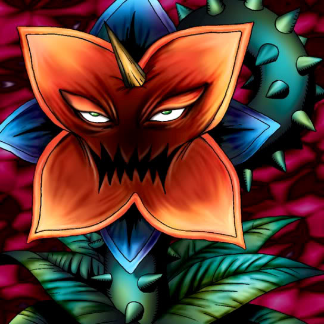

Dark Plant

Description: "When this card is destroyed in battle, all adjacent spaces are transformed into CRUSH terrain."
STATS
ATK: 300
DEF: 400DECK COST
Deck Cost per Card: 12EFFECT NOT IMPLEMENTED
Fusion List (71 Possible Fusions)
- Dark Plant + Air Marmot of Nefariousness = Flower Wolf
- Dark Plant + Arlownay = Queen of Autumn Leaves
- Dark Plant + Armaill = Bean Soldier
- Dark Plant + Armed Ninja = Bean Soldier
- Dark Plant + Armored Zombie = Pumpking the King of Ghosts
- Dark Plant + Battle Warrior = Bean Soldier
- Dark Plant + Blackland Fire Dragon = B. Dragon Jungle King
- Dark Plant + Candle of Fate = Firegrass
- Dark Plant + Clown Zombie = Pumpking the King of Ghosts
- Dark Plant + Corroding Shark = Pumpking the King of Ghosts
- Dark Plant + Crawling Dragon #2 = B. Dragon Jungle King
- Dark Plant + Crawling Dragon = B. Dragon Jungle King
- Dark Plant + Dancing Elf = Queen of Autumn Leaves
- Dark Plant + Dark Prisoner = Rose Spectre of Dunn
- Dark Plant + Doron = Bean Soldier
- Dark Plant + Dragon Zombie = Pumpking the King of Ghosts
- Dark Plant + Fairy's Gift = Queen of Autumn Leaves
- Dark Plant + Fiend's Hand = Firegrass
- Dark Plant + Flame Ghost = Pumpking the King of Ghosts
- Dark Plant + Flame Snake = Firegrass
- Dark Plant + Goddess of Whim = Queen of Autumn Leaves
- Dark Plant + Greenkappa = Bean Soldier
- Dark Plant + Griffore = Flower Wolf
- Dark Plant + Harpie Lady = Queen of Autumn Leaves
- Dark Plant + Harpie's Pet Dragon = B. Dragon Jungle King
- Dark Plant + Hinotama Soul = Firegrass
- Dark Plant + Injection Fairy Lily = Queen of Autumn Leaves
- Dark Plant + Key Mace = Queen of Autumn Leaves
- Dark Plant + Kuriboh = Rose Spectre of Dunn
- Dark Plant + Little Chimera = Flower Wolf
- Dark Plant + Lunar Queen Elzaim = Queen of Autumn Leaves
- Dark Plant + M-Warrior #1 = Bean Soldier
- Dark Plant + M-Warrior #2 = Bean Soldier
- Dark Plant + Magical Ghost = Pumpking the King of Ghosts
- Dark Plant + Magician of Faith = Queen of Autumn Leaves
- Dark Plant + Maiden of the Moonlight = Queen of Autumn Leaves
- Dark Plant + Mask of Darkness = Rose Spectre of Dunn
- Dark Plant + Masked Clown = Bean Soldier
- Dark Plant + Mech Mole Zombie = Wood Remains
- Dark Plant + Midnight Fiend = Rose Spectre of Dunn
- Dark Plant + Milus Radiant = Flower Wolf
- Dark Plant + Monster Eye = Rose Spectre of Dunn
- Dark Plant + Moon Envoy = Bean Soldier
- Dark Plant + Mushroom Man #2 = Bean Soldier
- Dark Plant + Mystery Hand = Rose Spectre of Dunn
- Dark Plant + Mystical Elf = Queen of Autumn Leaves
- Dark Plant + Nemuriko = Queen of Autumn Leaves
- Dark Plant + Obese Marmot of Nefariousness = Flower Wolf
- Dark Plant + Petit Dragon = B. Dragon Jungle King
- Dark Plant + Princess of Tsurugi = Queen of Autumn Leaves
- Dark Plant + Queen's Double = Queen of Autumn Leaves
- Dark Plant + Shadow Specter = Wood Remains
- Dark Plant + Silver Fang = Flower Wolf
- Dark Plant + Sinister Serpent = Snakeyashi
- Dark Plant + Skelgon = Pumpking the King of Ghosts
- Dark Plant + Skull Servant = Wood Remains
- Dark Plant + Skull Stalker = Bean Soldier
- Dark Plant + Swordsman from a Foreign Land = Bean Soldier
- Dark Plant + Synchar = Flower Wolf
- Dark Plant + Temple of Skulls = Wood Remains
- Dark Plant + The 13th Grave = Pumpking the King of Ghosts
- Dark Plant + The Little Swordsman of Aile = Bean Soldier
- Dark Plant + The Shadow Who Controls the Dark = Rose Spectre of Dunn
- Dark Plant + The Unhappy Maiden = Queen of Autumn Leaves
- Dark Plant + Water Element = Queen of Autumn Leaves
- Dark Plant + Water Girl = Queen of Autumn Leaves
- Dark Plant + Wolf = Flower Wolf
- Dark Plant + Wood Remains = Pumpking the King of Ghosts
- Dark Plant + Wretched Ghost of the Attic = Rose Spectre of Dunn
- Dark Plant + Yamatano Dragon Scroll = B. Dragon Jungle King
- Dark Plant + Zombie Warrior = Pumpking the King of Ghosts